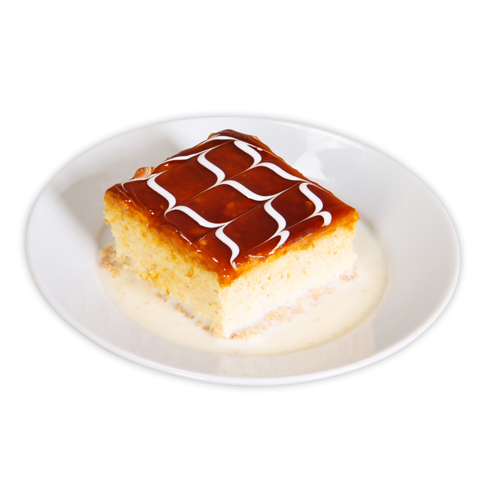

Triliçe
4 kişilik
İçindekiler
- 5 adet yumurta
- 1 su bardağı şeker
- 1,5 su bardağı un
- 1 paket kabartma tozu ve vanilya
- 3,5 su bardağı süt
- 3 yemek kaşığı toz şeker
- 200 gram sıvı krema
- 1 çay bardağı şeker
- 1 yemek kaşığı tereyağı
- 200 gram sıvı krema
- Krem şanti (1 paket)
Hazırlanışı
- İlk olarak karıştırma kabına yumurta ve toz şekeri koyup boza kıvamına gelinceye kadar çırpın.
- Daha sonra un, vanilya ve kabartma tozunu ekleyip spatula yardımıyla alttan üste doğru karıştırın.
- Yağlı kağıt serili fırın kabına döktüğünüz karışımı 170 derecelik fırında 10 dakika, ısıyı 150 dereceye düşürüp 30 dakika pişirin.
- Trileçenin sütlü sosu için bir kaba aldığınız süt, toz şeker ve sıvı kremayı çırpın. Daha sonra buzdolabına beklemeye alın.
- Karamelli sos için tavanıza koyduğunuz şekeri orta ateşte karıştırarak eritin.
- Açık bir renk alan karamele 1 yemek kaşığı tereyağı ekleyip yağı eritin.
- Sıvı kremayı da eklediğiniz sosu kıvam alıncaya değinceye karıştırarak kısık ateşte pişirin.
- Fırından çıkartıp ılımaya bıraktığınız keki ter çevirin. Yağlı kağıdı çıkartıp çatalla delikler açın.
- Soğuk şerbeti kekin üzerine dökün.
- Köpürtülmüş krem şantinin bir kısmını süslemek için ayırıp kalanını kekin üzerine yayın.
- Ilımış olan karamel sosunu da krem şantinin üzerine dökün.
- Ayırdığınız krem şantiyi bir kürdan yardımıyla süslemek amaçlı kullanın.
- 5-6 saat dinlendirdiğiniz trileçeyi dilimleyerek servis edebilirsiniz. Afiyet olsun.
